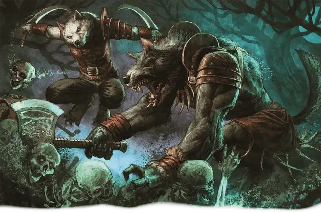

Волколак
Lupin

Тип существа Гуманоид
Размер Средний (рост около 4–7 футов) или Маленький (рост около 2–4 футов); выберите при выборе этого вида
Скорость 30 футов
Обладатели топорчащейся шерсти и рычащих пастей, волколаки — одни из тех теней, которых в Туманах стоит опасаться. Волколаки зачастую выходят из столкновений с верволками, если проклятие ликантропии не вполне набирает свою силу. В отличие от настоящих верволков, волколаки не могут перекидываться в волка или человека; они навсегда остаются в гибридной форме получеловека-полуволка. Преображённые проклятием волкоподобные тела даруют волколакам звериную мощь, острые чувства и вой, от которого кровь стынет в жилах.
Особенности
Вы обладаете следующими особенностями вида:
Тёмное зрение. Вы обладаете Тёмным зрением дальностью 60 футов.
Звериный наскок. Ваши Безоружные удары наносят Рубящий урон вместо Дробящего. Кроме того, когда в ваш ход в рамках действия Атака вы попадаете Безоружным ударом по существу,вы можете применить сразу варианты Урон и Толчок Безоружного удара. Вы можете воспользоваться этим преимуществом только один раз за ход.
Вой. Бонусным действием вы издаёте потусторонний вой. Каждое существо на ваш выбор из находящихся в пределах 15 футов от вас должно преуспеть в спасброске Мудрости (Сл 8 + ваши Бонус владения и модификатор Телосложения), иначе будет совершать с Помехой броски атаки и спасброски до начала вашего следующего хода.
Вы можете использовать эту особенность количество раз, равное вашему Бонусу владения, и вы восстанавливаете все потраченные использования по завершению Долгого отдыха.
Инстинкты оборотня. Вы получаете владение навыком Восприятия, Выживания или Скрытности.